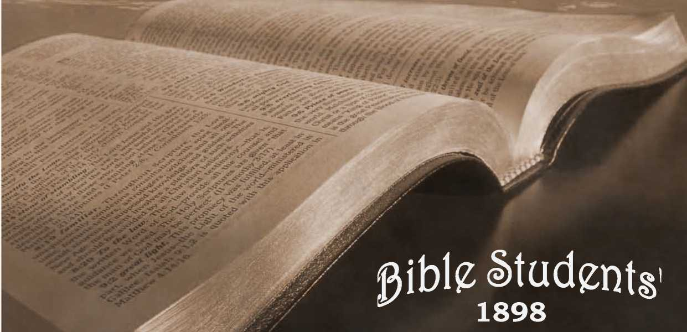

No. 41—Must We Abandon Hope of a Golden Age?
OLD THEOLOGY QUARTERLY. No. 41.—APRIL, i8g8.
‘ Entered as Second-Class Mail Matter at the P. O., Allegheny, Pa.
SAMPLE TRACTS FREE ! SUBSCRIPTION PRICE, SIX CENTS PER YEAR—48 PAGES.
' ■ -----—O —- ■
l\/f ISS Frances E. Willard, deceased, highly esteemed for her works in the cause of temperance and morality, is accredited with an epigrammatic statement which is generally supposed to contain an essence of wisdom amounting almost’to inspiration, as follows:— “only-the golden rule can bring the golden age.”
. Were we sure that Miss Willard was inspired, or, were we sure that in this sentence she had gathered up the spirit and essence of divine revelation on this subject, we would in either case lose all the hope we now entertain for the glorious future.
It is over eighteen centuries since our Master promulgated the Golden Rule; and his disciples and followers for all these centuries have preached it. His words have been translated into every language under heaven, and yet, at this moment, how extremely few there are of the world’s population of fifteen hundred millions who practice this rule! Nay, how few there are even of our Master’s professed followers who make any pretense at governing their actions, their words and their thoughts by this Golden Rule! Let the answer come from every quarter,—from the nations of Christendom,
2 Must We Abandon *
■ f
from the business men and manufacturers, from the mechanics and laborers, from the home c roles, where * selfishness mars everything, and, finally, from the a Churches professedly advocating the Golden Rule. How much we see of slander, anger, malice, hatred, selfishness, meanness; how little we see of any effort to control these in the lives of professed Christians; and how little reason we hare, therefore, to supose that the rule is observed in their hearts.
And yet, if Miss Willard were a true prophetess, or if she voiced the testimony of the Bible prophets, the only hope of a Golden Age lies in man’s acceptance of this Golden Rule which has met with such slight acceptance for more. than eighteen centuries. Must we abandon hope of a glorious Golden Age ? Can there be • no Millennium until all mankind, or a majority at least, shall have voluntarily accepted the Golden Rule, and brought their hearts and lives into conformity there- > with? If so, the Millennial dawn will never come. Reason and logic can reach, no other conclusion than this. Must we give up hope ?
No, we will not give up hope, for we have “amove sure word of prophecy,’' to which “we do well to take heed, as unto a light which shineth in a dark place, until the day dawn. ” (2 Pet. 1:19.) We are still in the dark place; sin and selfishness still abound; the Golden Rule does not control; we see no evidence of a general acceptance of it: but the more sure word of prophecy foretold this very condition, foretold that the present * would be a dark time, and foretold that a glorious dawn would come. We do well indeed to take heed to the prophetic testimony respecting what great light will ’■ usher in the Golden Age,
So far from telling us that the Golden Age will come by the adoption of the Golden Rule among the inhabitants of the earth, the more sure word of prophecy tells us to the contrary, that the Golden Rule will come more and more into disrepute, and that the rule of selfishness and sin will abound; and that the result thereof will be a total wreck of present institutions, in a time of trouble such as was not since there was a nation (Dan. 12 ;i): a time of anarchy, brought on by the neglect of the Golden Rule; a time in which “every man’s hand shall be against his neighbor; and there shall be no peace to him that goeth out nor to him that cometh in.”—Zech. 8:10.
This same sure word of prophecy leaves us not to grope on in doubt and fear, but assures us that beyond the coming trouble Immanuel shall reign—that he will set up his Kingdom upon the ruins of the present selfish institutions and systems which will then be ground to powder and “become as the chaff of the summer threshing-floors. ” (Dan. 2:35.) It informs us that Immanuel will establish his Kingdom by means of this time of trouble, and indeed that the trouble itself will be his judgment against sin and selfishness, against the neglect of the Golden Rule which he laid down, and that he will break in pieces and consume all these present institutions, and establish in-the earth a kingdom of righteousness, whose law will be the law of Love—■ the Golden Rule.
In harmony with this is the testimony of the more sure word of prophecy that, “When the judgments of the Lord are abroad in the earth [producing the great time of trouble], the inhabitants of the world will learn righteousness.” (Isa. 26:9.) They will learn the inexpediency of sin and selfishness, and that thereafter under divine direction, under the rule of the Heavenly Kingdom (Christ and his Church, in spiritual power and glory), no other laws or rules than the Golden Rule shall be permitted; and under its glorious administration, the prophetic testimony is, “the whole earth shall be filled with the knowledge of the glory of God, as the waters cover the great deep’—so that it shall no longer be necessary to say one to the other, “Know thou the Lord ! ” because all shall know him, from the least to the greatest.—Jer. 31:34; Heb. 8:n.
This is the glorious day, foretold by Moses and by the Apostle Peter, when the great Prophet, Priest and King,—the Christ,—shall rule the world in righteousness, and execute justice in the earth; when he shall lift up also the poor and the needy, and him that hath no helper, and lay justice to the line and righteousness to the plummet, and bless all the families of the earth with the knowledge of the Lord and with opportunity, if they will, to come into harmony with him and to obtain the gift of God, eternal life, through Jesus Christ, our Lord: while all who reject the grace of God and the New Covenent shall be destroyed from among the people, in the second death.—Acts 3:22, 23. ;
Let all those who desire the truth, and who desire to have its sanctifying influence upon their hearts and lives, give the less heed to earthly prophets and wise men and women, however good they may be, and give the more earnest heed to the ‘ ‘more sure word of prophecy; whereunto they do well that they take heed, as unto a light that shineth in a dark place, until the day dawn.”
Neither logically nor Scripturally is there ground for hope of the Golden Age except in the institution of the Kingdom of Christ, for which he taught us to pray, “Thy Kingdom come, thy will be done on earth as it is done in heaven.” Not only is this Kingdom the world’s hope, but it is also the Christian’s hope: he hopes to become a joint-heir with his Redeemer in that Kingdom. And, “he that hath this hope in him, puri-fieth himself, even as he is pure.”—i John 3 :3.
Let us therefore change the statement, and tell to the whole world the “gospel of the Kingdom,” that—
ONLY THE REIGN OE CHRIST CAN BRING THE GOLDEN AGE.
-----*------
Lift up your heads, desponding pilgrims;
Give to the winds your needless fears;
He who hath died on Calvary’s mountain, Soon is to reign a thousand -years. '
Tell the whole world these blessed tidings;
Speak of the time of rest that nears;
Tell the oppressed of every nation, Jubilee lasts a thousand years.
What if the clouds do for a moment
Hide the blue sky where morn appears?
Soon the glad sun of promise given Rises to shine a thousand years.
Haste ye along, ages of glory;
Haste the glad time when Christ appears.
O!-that I may be one found worthy
■ To reign with him a thousand years. ■■
- A thousand years! earth’s coming glory!
’Tis the glad day so long foretold;
’Tis the bright mom of Zion’s glory Prophets foresaw in times of old.
—Poems and Hymns of Dawn.
ivisr
■■ OF
Scriptures which We Understand to Teach
----AND -
FUTURE PROBATION.
4 . o.1 n_9 , Note that the inspired Apostle declares that
xSJs—----- all G od’s holy prophets spoke of these times
(vss. 21, 24). We should therefore expect to find something concerning Restitution in the writings of each prophet of the Old Testament.
r.~ 19-9 ia• 18 ■ W the families of the earth are here men-<3'en’22-17 18 t‘one<^ as beneficiaries. Observe that St.
Paul explains that the Seed which will confer the blessing is Christ and his Church (the mystical body of which Jesus is the Head).—Gal. 3:16, 29; 1 Cor. 12:12, 27;
Eph. 1:22, 23.
T ...» ok. m Israel’s Jubilee was a type or shadow, the substance of which shall be realized in the world-wide Restitution which will follow the establishment of God’s Kingdom at the second advent of our Lord Jesus. Heb .10:1. Deut. 18:15, 18,19. So applied by St. Peter.—Acts 3:22.
‘TZ7. This restoration of life was a foreshadowing
■ ofthegreatTimesofRestitution.Isa.25:6-9.
2 Kings 4:33-36., A figure, as the preceding. 52^4619710772X 7-15; 96:10-13; 98:4, 9.
t -. That we may know positively who are to be
the blessed ones, who shall enjoy the privilege of Restitution by return to harmony with God, compare the words, “ransomed of the Lord” (vs. 10) with 1 Tim. 2:6, ‘a ■ ransom for all.” '
t QO.ie.91.8 o For comments on these words promising a Restitution blessing, see Rom. 11-12, 15.
Jer. 31:29, 30, 34. Compare Rom. 5:12; John 1:9; 1 Tim. 2:4-
tt. > • i ia aa m God saw fit (vs.50) toslay the Sodomites;
yet our Lord Jesus said (Matt. 11:23) that they would have repented under such a ministry as had been granted to Capernaum, which repented not. Does not this course on God’s part indicate that, since he is no respecter of persons (Acts , 10:34), and since it is his will that all shall come to a knowledge of the truth, the death-imprisoned Sodomites shall be brought ' forth (John 5: 29) to their “former estate” (Ezek. 16:55), and “in that day” be given an opportunity to believe in the “only name given under heaven or among men, whereby we must be saved?” (Acts 4:12.) Our Lord’s declaration that it would be more tolerable for Sodom in the Day of Judgment than for some who heard and rejected him, implies that that time will be tolerable for all in proportion as their sins had been sins of ignorance. (Matt. 11:24; Luke 12:47, 48.) And it would be di fflcult to foretell the restitution of the Sodomites more clearly andmore definitely than is done in this chapter. And in selecting so extreme an example of. clemency our Eord evidently intended that we should see that the sacrifice which he gave was unquestionably “ a ransom for all.”
Dam'oi o-ii- This is a prophecy of Restitution. Because < 7-13 14 27 any P.roPnecy of the Kingdom of Christ — and his saints is a prophecy of Restitution; forthe Kingdom is to be set up at the second advent of our Lord Jesus, “whom the heavens must receive until the times of . Restitution of all things.”—Acts 3:21.
HoseaKL^—Joel 1:32; 3:1, 2, 17,18.
» ' o-11 1 a E°r inspired comment on this prophecy of Restitution see Acts 15:13-18. The words of this apostle agree with those of Paul (Rom. 11), for he says that this blessing is to.be brought to Israel in order that the rest of “men might seek after the Lord, and all the Gentiles.”
Jonah_3:10; 4:11. Compare Matt. 12:41.
Micah 4:1-4. : Compare Isa. 2:2-4.
Nahum 1:15. Compare Isa. 52:7.
Hab. 2:1L—Zepln_3:9.—Haggai 2:6, 7—Zech. 8:20-23.
Malachi 4^2.______ Compare also Psa. 30:5; Matt. 13:43.
9- • It should be noted that when the Lord oc-—cupies his throne, the Church reigns with him. “When Christ, who is our life, shall appear, then shall ye also appear with him in glory.” (Col. 3:4.) Christ will not reign over his glorified Church, nor the members of his glorifiedChurch reign over each other, but the Church complete will reign over all nations, dead and living (Rom. 14:9), else their title “Seed of Abraham” (Gal. 3:29) is a misnomer.
Luke 2:10. 30-32.
ini™ q. it. k. ok an Observe that our Lord’s words in verse30 iL™.—indicate that the destiny of those who come up to judgment (vs. 29, R. V.) is not fixed beforehand. Testi-, jgony is to be taken, and “as I hear,I judge.” And all this there, ' fore refers to the ‘ ‘ Times of Restitution,’ * t i, I? n oA 01 oo Our Lord’s last prayer was not on behalf of the world, but on behalf of his disciples and those who should believe through their word, and his prayer for the whole Church was made that the whole world might afterward have the opportunity to “believe and know that thou hast sent me;”—in the times of Restitution.
Rom. 5:18, 19; 8=19-22.
ir 1^-91-2'1 Note here that the expression “they who are Christ’s at his coming (parousia, presence)” evidently does not refer to the Church, f<5r they are Christ’s before his second advent, and,with him constitute the first-fruits first mentioned. (Note also James 1:18.) “They who are Christ’s at his coming”—during his presence—during his Millennial reign, evidently refers to “all them that believe in that day;’’—the day of Christ, the times of Restitution.—2Thes. 1:10.
K.iq «. o Some think that 1 Cor. 6:2 teaches that there will be no opportunity to exercise faith and repentance in the Millennial age, but a careful reading of Isa 49:8-10, from which it is quoted, indicates that the body of Christ is helped and succored in its day of salvation, in order that it may be the instrument of God for the blessing and releasing of those who are in the prisonhouse of death. Here also Restitution is taught.
Gal. 3:8.—Eph. 1:10.—Phil. 2:9-11.—Col. 1:20,
~ ~ : A “blessed hope,” truly, when we realize
Titus 2:13. - r that the event for which we hope is to usher
in the “Times of Restitution.”
Heb. 6:13,14; 8:11. , -
_ „ „ SincetheChurchistobearoyalPriesthood,
USSJSEtiji------- there will doubtless be some for whom they
will perform the priestly offices; and for whom, if not for the world of mankind, ransomed by the great High Priest and his ‘ ‘ better sacrifices ? ”
T ,. A prophecy of Restitution, by Enoch, who
“pleased God.”
onn-99 1 17- All the events here mentioned, including KeV’90!19 ^Z:1’ invitation to “whosoever will,” are to
________ be fulfilled after thesecond advent of Christ, after the Church has become the “ Bride, the Lamb’s, wife,” after the establishment of his Kingdom. Observe also, that the invitation is to be extended to “all the dead,” before the throne.
ORDER OTHER BEADING. SAMPLE COPIES FREE.
“BIBLE HOUSE,” ALLEGHENY, PA.
BRITISH BRANCH : IJI GREEN ST., FOREST GAM, LONDON.